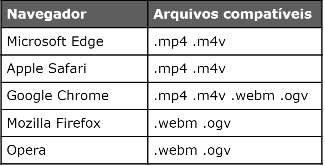
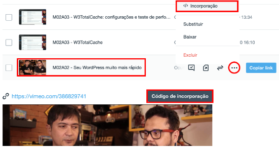

Fotos, áudios e vídeos são essenciais na construção de sites atualmente. Ilustrar bem seu conteúdo ajuda a esclarecer a mensagem que você quer passar. Mas tem que tomar cuidado com formatos e tamanhos, pois nem todas as pessoas vão acessar seu site com o computador.
A mídia que mais sofre problemas de tamanho de exibição são as imagens, saber adaptar isso é de extrema importância.
O primeiro passo para adaptar o conteúdo ao tamanho da tela é aprender a gerar imagens de tamanhos diferentes e fazer com que o navegador
carregue a imagem certa para cada situação. Para isso, existem as tags <picture> e <source>.
Para esse exemplo criamos 3 imagens com diferentes tamanhos, 300x300px, 700x700px e 1000x1000px. Para isso foi usado o GIMP,
essas imagens serão carregadas pelo navegador de acordo com o tamanho da janela atual. Para isso criaremos o seguinte código:
Como pode notar inserimos a tag <img> dentro da tag <picture>, essa nova tag vai ter também as outras fontes de imagem. Como padrão a imagem 1000x1000px vai ser carregada.
O problema começa a surgir quando a janela do navegador chega perto dos 1000px de largura da imagem, dessa forma a imagem não cabe mais. Vamos adicionar uma linha para
resolver o problema:
Note que a tag <source> possui 3 atributos:
type indica o media type da imagem que usamos (veja sobre isso no ex009)srcset configura o nome da imagem que vai ser carregada quando o tamanho indicado for atingidomedia indica o tamanho máximo a ser considerado para carregar a imagem indicada no atributo srcset
A o recarregar o site você vai ver que a imagem vai diminuir de tamanho quando você diminuir o tamanho de sua janela. Vamos acrescenter mais um
source à nossa imagem:
Algo que notei foi que ao colocar as tags estava ocorrendo alguns bugs em relação à mudança de tamanho, recomendo que escreva primeiro só a tag <source> ao invés da tag <source media> pois ela tá bugando, vai adicionado as outras tags uma por uma, ok?
É importante existir uma ordem entre os <source>, nessa configuração os itens mais acima são de tamanhos menores para max width
e os a baixo vão ficando maiores. O último dentro de <picture> deve ser a imagem padrão, a que você colocou na tag <img>.
Antigamente era muito complicado colocar aúdio nos sites, sendo necessário o conhecimentos de várias linguagens de programação. Mas com a chegagem da HTML5 isso se tornou mais fácil, bastando usar a tag <audio> e alguns <source> para ser capaz de tocar qualquer aúdio. Ex:
Vamos dar uma olhada nos principais atributos da tag <audio>:
preload indica se o aúdio será, ou não, pré-carregado, esse atributo aceita 3 valores:metadata vai carregar apenas as informações sobre o arquivo (tamanho, tempo, informações de direito, etc)none não vai carregar absolutamente nada até que o usuário clique no botão play ou um script inicie a reproduçãoauto é o padrão, vai carregar o arquivo todo assim que a página for carregada, mesmo que a pessoa nunca aperte para tocarcontrols vai apresentar o player na tela. Se não for colocado dentro da tag <audio>, o controle ficará transparente, impossibilitando a interação com eleautoplay quando inserido, vai iniciar a reprodução do aúdio assim que a página carregarloop faz com que o aúdio seja repetido eternamente assim que ele termina de reproduzir uma vez
Dentro da tag <audio> adicionamos vários <source> com farmatos diferentes do mesmo aúdio.
Isso serve como precaução, caso o de cima não rode o de baixo dele vai rodar, você também tem que colocar
o atributo type onde você coloca o formato do áudio. Mas caso todos falhem
será disponibilizadoum parágrafo que permite o download do arquivo MP3 para ouvir.
Para inserir um vídeo, caso ele esteja em nosso próprio servidor, utilizamos a tag <video>. Ex:
Primeiramente vamos criar a tag <video> e configurar alguns atributos dela:
width indica a largura que o vídeo vai ter na tela, no exemplo acima foi de 600pxposter configura uma imagem que vai aparecer na capa enquanto o visistante não dá playcontrols configura se os controles do vídeo vão aparecer na parte inferior da mídia. Por padrão ela não aparece, basta colocar a palavra control dentro da tag <video>autoplay diz ao navegador se o vídeo vai tocar automaticamente assim que a página carregarDiferente de aúdios, onde o formato indica o padrão para abrir e reproduzir a mídia, vídeos possuem formatos e codecs e isso pode tornar o vídeo invíavel pela maioria dos dispositivos e navegadores. É preciso estar atento a esse detalhe.
Formatos suportados: MPEG, WEBM e OGG, os 2 primeiros possuem maior compatibilidade com navegadores atualmente.

Quando colocamos vídeos em nosso próprio servidor podemos ter problemas como: alto consumo de banda, site lento e
incompatibilidade com alguns navegadores devido aos codecs.
Um vídeo mp4 de 150MB se for visto por 200 visitantes vai ter utilizado 29GB de tráfego, o que é muita coisa. Devemos ter cuidad quando se trata de guardar nossos próprios vídeos.
O YouTube e o Vimeo são serviços para hospedagem de vídeos, o que faz com que nossos prórpios recursos de host contratado não seja consumido. No entando, cada um deles possuí vantagens e desvantagens:
YouTube
Vimeo
Existem recursos que dão códigos prontos em HTML5 para incorporar vídeos do YouTube ou Vimeo.
No YouTube basta você abrir o vídeo, clicar em compartilhar e clicar em incorporar.
O código HTML personalizado vai aparecer em uma nova janela de contexto, também há um botão que ter permite COPIAR o código com a tag
do <iframe> que vai aparecer em sua página. Volte no editor de código e insira a tag.
Com o Vimeo o procedimento é semelhante, abra seu painel de controle do serviço e vá para sua lista de vídeos hospedados. Na
lista de mídias armazenadas clicque no botão com reticências e escolha a opção incorporação.
Na janela você pode clicar no botão Código de incorporação, fazendo com que a tag <iframe> apareça.
Após copiar o link basta colar ele em seu código na parte onde voce^quer que ele apareça.
